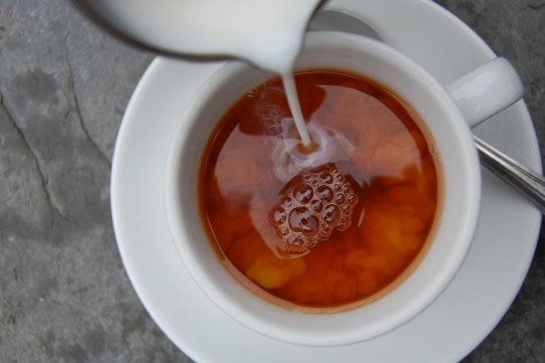
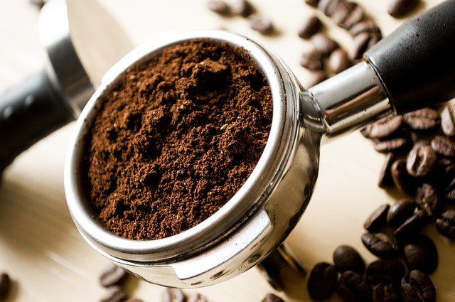
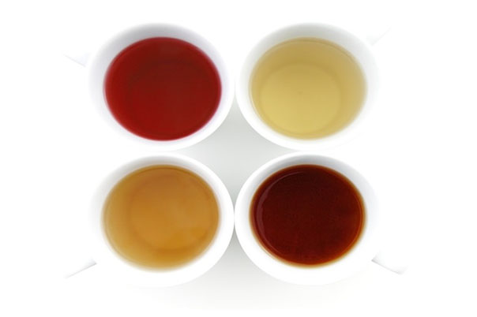

優質產品 專業供應Quality Products, Professional Supply
從咖啡豆到港式奶茶，從自家品牌淡奶到獨家代理產品，為您提供全方位餐飲供應。From coffee beans to HK milk tea, from own brand milk to exclusive agency products — comprehensive F&B supply for your business.

港式奶茶茶葉HK Milk Tea Blends
捷安咖啡深明港式奶茶對茶葉品質及調配的講究。我們精選來自錫蘭的優質紅茶，經多年經驗調配出絲滑濃郁的茶底，茶味層次分明，與淡奶完美融合，成就每一杯香濃順滑的港式奶茶。We understand the precision required for authentic Hong Kong milk tea. Our expertly blended Ceylon teas deliver smooth, full-bodied flavor that perfectly complements evaporated milk for that classic HK cha chaan teng taste.
無論是茶餐廳、快餐店或酒樓，我們提供不同濃度及風味的茶葉配方，滿足不同客群的口味需求。自家烘焙工廠確保茶葉新鮮度及穩定供應。Whether for cha chaan teng, fast food or restaurants, we offer various strength and flavor profiles to meet diverse customer preferences. Our own facility ensures freshness and stable supply.

咖啡豆及咖啡粉Coffee Beans & Blends
我們提供阿拉比卡（Arabica）及羅布斯塔（Robusta）咖啡豆，來自世界各地優質產區，包括巴西、哥倫比亞、越南等。自家烘焙工廠配備專業烘焙設備，根據不同豆種特性調整烘焙深度，確保每一批咖啡豆風味穩定、香氣飽滿。We supply premium Arabica and Robusta beans sourced from top origins including Brazil, Colombia, and Vietnam. Our roasting facility is equipped with professional equipment to tailor roast profiles for each bean variety, ensuring consistent flavor and rich aroma in every batch.
無論您需要淺焙、中焙或深焙，單一產區或混合配方，我們都可以為您訂製專屬的咖啡豆產品。適用於意式咖啡、美式咖啡、港式咖啡等多種沖煮方式。Whether you prefer light, medium or dark roast, single origin or custom blends, we can tailor coffee products to your specifications. Suitable for espresso, Americano, HK-style coffee and more brewing methods.

淡奶系列Evaporated Milk Series
我們推出自家品牌淡奶系列，專為港式奶茶而設計，包括「佳高植脂淡奶」及「利美植脂淡奶」。兩款產品均以香滑細膩的口感受到業界歡迎，能夠帶出茶葉的層次與香氣，令整杯奶茶更醇更厚。We proudly present our own brand evaporated milk series, specially designed for Hong Kong milk tea: Ka Kao and Lei Mei plant-based evaporated milk. Both products are widely acclaimed in the industry for their smooth, silky texture that enhances tea layers and aroma for a richer, fuller cup.
另外，我們更推出「佳高甜奶」，專為「茶走」用家打造，令奶茶口感更順滑、茶味更濃香，同時帶出一絲天然的焦糖韻味，讓港式奶茶的風味更富層次與獨特個性。We also offer Ka Kao Sweetened Milk, crafted specifically for "tea tsau" (tea with condensed milk). It delivers an even smoother texture with enhanced tea fragrance and a hint of natural caramel notes, adding depth and character to authentic Hong Kong milk tea.
產品系列：Product Line:
- 佳高植脂淡奶 Ka Kao Evaporated MilkKa Kao Plant-Based Evaporated Milk
- 利美植脂淡奶 Lei Mei Evaporated MilkLei Mei Plant-Based Evaporated Milk
- 佳高甜奶 Ka Kao Sweetened Milk（茶走專用）Ka Kao Sweetened Milk (for Tea Tsau)
皇冠牌Crown Brand
皇冠牌西洋菜蜜 · 菊蜜Crown Brand Watercress & Chrysanthemum Honey
除了港式奶茶，西洋菜蜜同樣是香港人心中的必飲經典。捷安咖啡有限公司為香港歷史悠久的西洋菜蜜及菊蜜品牌「皇冠牌」在中國香港及中國澳門的唯一總代理。Beyond Hong Kong milk tea, watercress honey is another beloved classic drink. Tsit On Coffee is the sole distributor for Crown Brand watercress and chrysanthemum honey in Hong Kong and Macau — a historic brand deeply rooted in local beverage culture.
我們致力傳承地道的港式飲品文化。多年來，「皇冠牌」不只是味道的象徵，更代表一份情感——那是一種從上一代延續到下一代的生活滋味。無論是茶餐廳、涼茶舖或零售通路，我們都能為您提供穩定供應及專業服務。We are dedicated to preserving authentic Hong Kong beverage heritage. For generations, Crown Brand has been more than just a flavor — it represents an emotional connection, a taste of life passed down from one generation to the next. Whether for cha chaan teng, herbal tea shops or retail channels, we provide stable supply and professional service.
🏆 香港及澳門唯一總代理🏆 Sole Distributor for Hong Kong & Macau
傳承地道港式飲品文化，世代相傳的經典味道。Preserving authentic HK beverage culture, a timeless classic across generations.
乾糧及罐頭Dry & Canned Goods
除了咖啡及茶葉，我們亦提供茶餐廳及餐飲業所需的各類乾糧及罐頭食材，包括麵粉、糖、油、醬料、罐頭食品等，一站式滿足您的採購需求。Beyond coffee and tea, we also supply a wide range of dry goods and canned products essential for cha chaan teng and F&B operations, including flour, sugar, oil, sauces, and canned foods — one-stop procurement for your business.
主食類Staples
麵粉、米、麵條等Flour, rice, noodles, etc.
罐頭食品Canned Foods
午餐肉、豆類、湯料等Luncheon meat, beans, soups, etc.
調味料Condiments
油、糖、醬料、香料Oil, sugar, sauces, spices